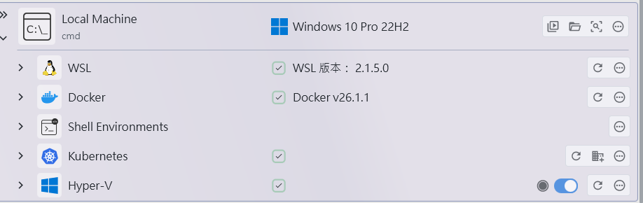

Windows 開發環境好用工具紀錄
我在 Windows 開發時常用三個工具：moudey/Shell，xpipe和 Ngrok。這些工具幫助我在開發更便利，想記錄下來。
1. moudey/Shell
moudey/Shell 優化 Windows 中右鍵單擊桌面、檔案、資料夾或工作列時出現的選單；除了介面直覺和美觀外，其中有一個我很常用的功能：
- 右鍵的移至功能：這個功能可以快速打開目標資料夾，不用自己一層層點開。
移至功能細節
- 可以快速移動到系統資料夾，如 Windows，Desktop，Documents，以及系統設定相關的「控制台」和「執行」功能等等。
2. xpipe
xpipe 能讓我更方便地操作與檢視遠程機器。以下幾個是我常用功能：
- 支援遠程遠程機器的連線：能記住密碼快速連線，免去重複輸入密碼的麻煩。
- 快速瀏覽或編輯遠程機器的檔案，並可直接使用 VS Code 或其他工具編輯遠程檔案。
- 查看遠程程序運行狀態：可以檢視 Docker 容器、Kubernetes 、Hyper-V 等執行狀態。
3. Ngrok
Ngrok 是一款內網穿透工具，非常適合本地開發專案的測試與分享，尤其是需要公開本地服務時。
- 快速網絡映射：可將本地服務映射到公開網址，讓測試和分享開發成果變得更簡單。
- 支援 HTTPS：即使是本地服務，也能快速建立安全的 HTTPS 通訊，無需額外配置憑證。
- Web Interface：能清楚地看到所有的請求和回應，在進行除錯時特別有幫助，很適合測試 API。
結論
除了這三個實用的工具外，如果常用 CMD 操作，還推薦安裝 Oh My Posh，它可以強化指令提示和美化外觀。